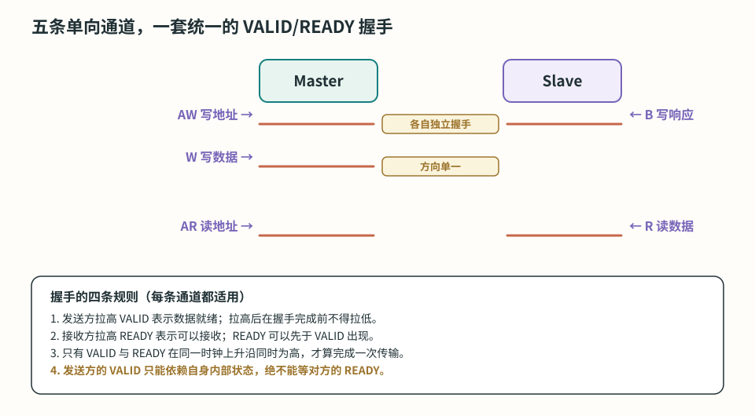

AXI4：五条通道与 VALID/READY 握手
AXI4 用五条方向固定、彼此独立的通道，把读写彻底分开；所有通道又共享同一套 VALID/READY 握手规则。理解这套规则，就理解了大半的片上总线设计。
01 / 为什么需要一套统一的总线协议？
把一个 FIR 滤波器、一个 DMA 引擎和几个控制寄存器拼进同一块 FPGA。如果每个模块都自定义握手信号——有的高有效、有的低有效、有的靠边沿——每多接入一个 IP，就要多写一套桥接逻辑，验证和时序收敛都会迅速失控。
片上总线协议的作用就是给 IP 核之间定一套统一的“交通规则”：谁先发、谁后接、什么时候算一次传输完成。ARM 的 AMBA（Advanced Microcontroller Bus Architecture）就是其中最广泛使用的一套，而 AXI 是 AMBA 里面向高带宽、高并发访存的成员。
本节的协议事实以 ARM 官方规范为准：AXI4 定义在 AMBA AXI 规范中。AMBA AXI 规范（IHI0022） 会随版本迭代，涉及具体的信号约束、响应编码或可选功能时，应回到规范当天版本查找；AMD 的 AXI Reference Guide (UG1037) 则是面向 Vivado 使用的工程参考。
02 / 五条独立通道
AXI4 把一次读或写拆成若干条方向单一的通道。每条通道只在一个方向上传信号，因而扇出小、组合逻辑浅，对时序收敛友好。写操作走 AW/W/B，读操作走 AR/R：
| 通道 | 方向 | 关键信号 | 作用 |
|---|---|---|---|
| 写地址 AW | M→S | AWADDR、AWVALID、AWREADY（+AWLEN/AWSIZE 等） | 发出写操作的目标地址 |
| 写数据 W | M→S | WDATA、WSTRB、WVALID、WREADY（+WLAST） | 发出写数据与字节使能 |
| 写响应 B | S→M | BRESP、BVALID、BREADY | Slave 告知写是否完成及其结果 |
| 读地址 AR | M→S | ARADDR、ARVALID、ARREADY（+ARLEN/ARSIZE 等） | 发出读操作的目标地址 |
| 读数据 R | S→M | RDATA、RRESP、RVALID、RREADY（+RLAST） | 返回读数据与读结果 |
一个容易被忽视的细节：AWLEN、AWSIZE、WLAST 等突发相关信号属于 AXI4-Full；在 AXI4-Lite 中每笔传输固定为 1 拍，这些信号被省略。同样，BRESP/RRESP 是两位的响应编码（如 OKAY/SLVERR/DECERR），具体取值以规范为准，不要凭记忆硬编码。
写地址与写数据走两条独立通道，意味着 Master 可以先发地址、后发数据，也可以先发数据——只要各自的握手满足。这给 Slave 带来一个设计决策：当 AW 与 W 不同时到达时，需要先把其中一个缓存下来，等两者都到齐再执行写入。

03 / VALID/READY：为什么它能避免死锁？
AXI4 的每条通道都用同一套两点握手：发送方拉高 VALID 表示“数据已就绪”，接收方拉高 READY 表示“可以接收”，两者在同一时钟上升沿同时为高时完成一次传输。四条规则构成全部机制：
- VALID 只能由发送方内部状态决定。 发送方不得等对方 READY 拉高后才拉高 VALID。
- VALID 一旦拉高，在握手完成之前不得拉低。
- READY 可以由接收方自行决定何时拉高，也可以先于 VALID 出现。
- 只有 VALID 与 READY 同时为高，才完成一次传输。
第 1 条是整个协议不会死锁的关键。假设双方都“等对方先举手”：Master 等 Slave 的 READY 才拉 VALID，Slave 又等 Master 的 VALID 才拉 READY。两者的下一步都依赖于对方的输出，而这个依赖环路里没有任何一个可以独立成立的起点，第一个传输就永远不会发生。规范把 VALID 的所有权强制归给发送方，就切断了这个环路。
握手还有三种典型时序：VALID 先到、READY 后到；READY 先就绪、VALID 后到；两者同时拉高（零等待）。一个健壮的 Slave 应对三者都正确，而不是只处理自己写 testbench 时恰好遇到的那一种。
需要区分的是：握手规则保证单条通道上的传输不会卡死，但一个完整事务（如“先收 AW 再收 W 再回 B”）的顺序与依赖由 Slave 的状态机负责。协议规定了通道间的先后约束，Slave 仍可能因为自己的圆环依赖而卡住，这是设计问题，不是协议缺陷。
04 / AXI4-Lite、AXI4-Full、AXI4-Stream 怎样选？
同一个 AXI 家族下的三个成员面向不同场景。选择它们看的是“数据怎么到达”，而不是名字里的版本号：
| 变体 | 地址通道 | 突发 | 典型用途 |
|---|---|---|---|
| AXI4-Lite | 有 | 不支持（每笔 1 拍） | 寄存器/控制状态访问 |
| AXI4-Full | 有 | 支持可变长度突发 | DDR、DMA、帧缓冲搬运 |
| AXI4-Stream | 无 | 无地址，靠流控 | 视频、ADC 采样、DSP 处理链 |
一个经验准则：只做寄存器配置用 Lite，搬大块数据用 Full，连续流处理用 Stream。 实际系统经常混用：一条 AXI4-Full 通 DDR，一组 AXI4-Lite 配寄存器，一条 AXI4-Stream 传视频。三者的共同点正是本章讲的 VALID/READY 握手。
05 / 一个最小 AXI4-Lite 从设备
下面用一个只包含写、读两组寄存器的最小例子，把前面的规则落到代码。它实现 4 个 32 位寄存器，地址增量 4 字节。
module axi_lite_regs #(
parameter DATA_W = 32
)(
input wire ACLK,
input wire ARESETN, // 低有效同步复位
// 写地址 AW
input wire [3:0] AWADDR,
input wire AWVALID,
output reg AWREADY,
// 写数据 W
input wire [DATA_W-1:0] WDATA,
input wire WVALID,
output reg WREADY,
// 写响应 B
output reg [1:0] BRESP,
output reg BVALID,
input wire BREADY,
// 读地址 AR
input wire [3:0] ARADDR,
input wire ARVALID,
output reg ARREADY,
// 读数据 R
output reg [DATA_W-1:0] RDATA,
output reg [1:0] RRESP,
output reg RVALID,
input wire RREADY
);握手策略选择最简单的一种：AWREADY 与 WREADY 恒为高，表示从设备总在准备好接收地址与数据。写入在 AW 与 W 同拍同时有效时发生。这并不是唯一正确做法，但能让第一版逻辑保持可读；真实设计往往在内部忙时拉低 READY。
reg [DATA_W-1:0] ctrl, status, data_in, data_out;
// 始终可以接收地址与数据
always @(posedge ACLK) begin
if (!ARESETN) begin AWREADY <= 1'b0; WREADY <= 1'b0; end
else begin AWREADY <= 1'b1; WREADY <= 1'b1; end
end
// AW 与 W 同拍到达时写入寄存器
always @(posedge ACLK) begin
if (!ARESETN) begin
ctrl <= 0; status <= 0; data_in <= 0; data_out <= 0;
end else if (AWVALID && AWREADY && WVALID && WREADY) begin
case (AWADDR[3:2])
2'b00: ctrl <= WDATA;
2'b01: status <= WDATA;
2'b10: data_in <= WDATA;
2'b11: data_out <= WDATA;
endcase
end
end写响应用一个两状态机：等写完成，再回到空闲等待下一笔。读响应采用寄存器读，地址握手后下一拍返回数据。这里先给出状态与响应部分，读路径在下一段给出。
reg wpend;
always @(posedge ACLK) begin
if (!ARESETN) begin
wpend <= 1'b0; BVALID <= 1'b0; BRESP <= 2'b00;
end else if (!wpend) begin
if (AWVALID && AWREADY && WVALID && WREADY) begin
BVALID <= 1'b1; BRESP <= 2'b00; wpend <= 1'b1; // OKAY
end
end else if (BREADY) begin
BVALID <= 1'b0; wpend <= 1'b0; // 响应被取走
end
end // 读地址握手：未处理完上一笔读时拉低 ARREADY（单笔未决）
reg rpend;
always @* ARREADY = ~rpend;
always @(posedge ACLK) begin
if (!ARESETN) begin
RVALID <= 1'b0; RDATA <= 0; RRESP <= 2'b00; rpend <= 1'b0;
end else if (!rpend) begin
if (ARVALID && ARREADY) begin
RVALID <= 1'b1; RRESP <= 2'b00; rpend <= 1'b1;
case (ARADDR[3:2])
2'b00: RDATA <= ctrl; 2'b01: RDATA <= status;
2'b10: RDATA <= data_in; 2'b11: RDATA <= data_out;
endcase
end
end else if (RVALID && RREADY) begin
RVALID <= 1'b0; rpend <= 1'b0; // 数据被取走
end
end
endmodule三段逻辑各自只关心一件事：写数据落存、写响应状态机、读数据寄存与 RVALID。它们共用同一个时钟与复位，每个输出都是寄存器或完全赋值的组合输出。
06 / 自检、边界与常见错误
这个从设备规模很小，但已经足够体现验证 AXI 接口时应该问的问题。不管用哪种仿真器，至少检查以下场景：
| 场景 | 预期现象 |
|---|---|
| 写 0x00 → 再读 0x00 | 读回值等于刚写入的值 |
| 写后不回 BREADY | BVALID 保持为高，不被吉掉 |
| READY 先于 VALID 拉高 | 传输在 VALID 到来时才完成 |
| 读地址握手后 RVALID 未取走 | ARREADY 拉低，不再接受新读地址 |
| 复位中途拉低 | 所有输出回到确定初值 |
最后回到两个最容易出错的点。第一，VALID 不能等 READY——一旦养成“先看对方 READY 再决定自己 VALID”的习惯，接口就会在某个未预料到的时序组合下卡死。第二，别把两家协议的信号名混为一谈：Verilog 里连接 AXI 用的是普通信号与握手逻辑，参考 AXI-Stream 的 TREADY 与 AXI4 的 READY 是同一思想但不同命名，交叉连线前先核对通道归属。
思考练习：为什么“AWREADY 恒为 1”会让实现变简单，却不一定最忧？
恒为高意味着 Slave 承诺随时能收地址，就不必为地址做反压与缓存。但如果写入逻辑会在时钟周期上冲突（例如寄存器阵列只有一组写端口），恒为高就会要求内部总是能立即消化——否则就需要额外的地址 FIFO，反而更复杂。真实从设备通常根据内部饱满度动态驱动 READY。